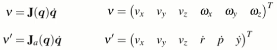
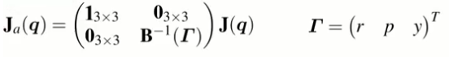
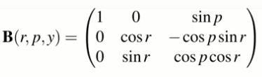

The analytic Jacobian relates change in roll-pitch-yaw angles to angular velocity.
We can re-express the spatial velocity using the analytic Jacobian \(\mathbf{J}_a\).

where \(\mathbf{J}_a\) is

and
